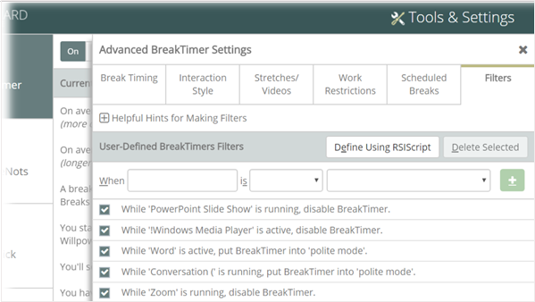
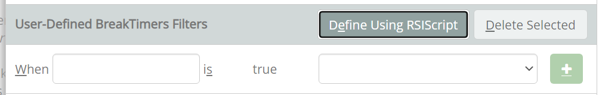
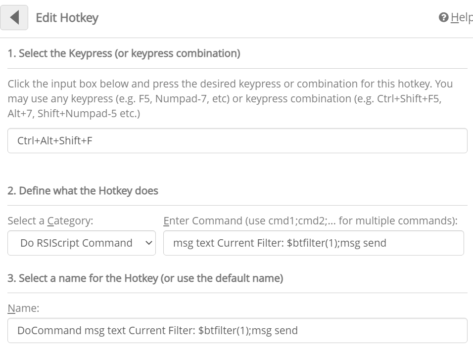

BreakTimer Filters let you create rules to restrict when and how BreakTimer suggests breaks. This can be helpful to make sure that BreakTimer doesn't intrude at unacceptable times. Some built-in rules are provided that restrict BreakTimer during presentations, but you can add filters to turn BreakTimer off or use Polite mode when an application is running or is the "active application" (i.e., the application is running and you are currently using it). Filters can also use the RSIScript programming language to create more complex rules.
To create a new rule:
There are a number of built-in filters which you will see if you visit the Filters tab. We often add new filters with new versions of RSIGuard, but to avoid disrupting customizations you may have made, you will only get these new filters if you do a factory reset.
To create filters using RSIScript, you first click "Define Using RSIScript". The fields change to show:

Insert a valid RSIScript expression into the "When" box. Then, select what should happen when the expression is 'true'.
Here is the RSIScript for the built-in filter "Presenting/Sharing/Busy" (which prevents breaks when you are sharing your screen and some other conditions where breaks would be inappropriate).
$or($equal($sys(NoticeState),1),$equal($sys(NoticeState),2),$equal($sys(NoticeState),4))
This script tests if the Microsoft Windows "Notification State" is 1, 2 or 4 (machine locked/screensaver, user is presenting, user has blocked interruptions).
Debugging Filters
It can be tricky to debug filters to confirm if they are configured correctly. One useful tool to help is to set up a hotkey to show if a filter is active. You can do this by setting up a hotkey like this:

Now, whenever you press Ctrl+Alt+Shift+F (you could of course use whatever key combination you like), RSIGuard will tell you if one of your filters is active.